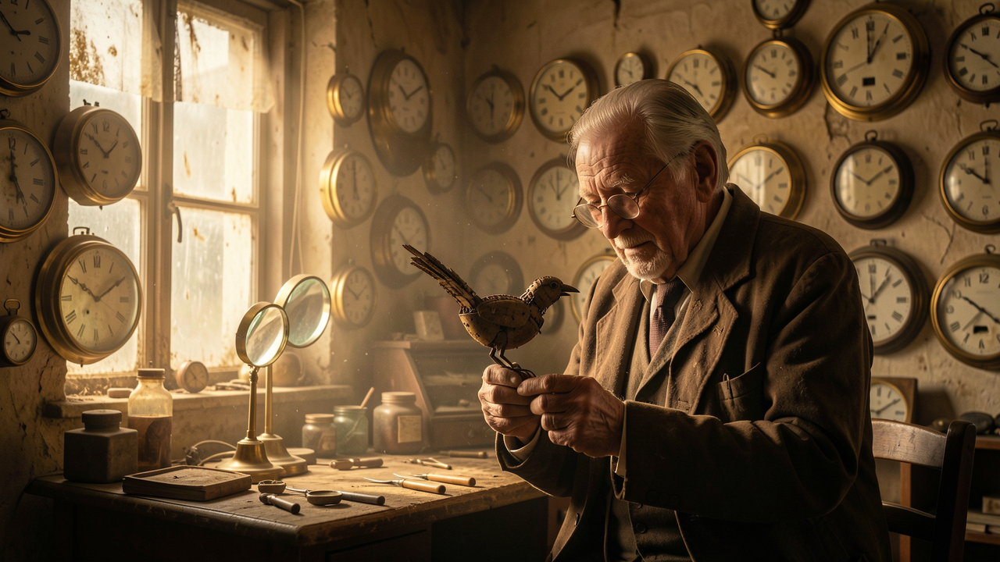

🧭 Intenção Antes de Estética
A regra de ouro deste framework é simples: crie prompts com intenção e mudança emocional, em vez de palavras estéticas vazias. Não basta empilhar "cinematic, 8k, beautiful lighting" — o que faz uma sequência funcionar é o arco: cada cena muda algo no estado emocional do público.
🎯 O arco de 5 cenas
Para seguir a regra, vamos acompanhar a história do relojoeiro e o pássaro mecânico através de cinco etapas, cada uma com objetivo, comportamento de câmera e emoção próprios:
- 1️⃣Setup — estabelecer o mundo · curiosidade calma
- 2️⃣Conflito — introduzir a mudança · incerteza e preocupação
- 3️⃣Escalada — aumentar a pressão · urgência
- 4️⃣Emoção — criar conexão · alívio e empatia
- 5️⃣Resolução — terminar com significado · esperança
💡 Dica prática
A escalada é o pico de tensão; a emoção é o respiro logo depois. Não termine no pico — a virada emocional e a resolução são o que dão sentido à sequência inteira.
1️⃣ Setup — Estabelecer o Mundo 🌍
Um plano aberto com pan lento de uma oficina antiga de relojoeiro, empoeirada e com pouca luz. Centenas de relógios de latão marcam o tempo em uníssono nas paredes. Um homem idoso com óculos de aumento lustra delicadamente uma engrenagem em sua bancada de madeira. A atmosfera é calma, organizada e nostálgica. Uma luz quente e suave entra por uma janela suja.
2️⃣ Conflito — Introduzir a Mudança ⚠️
Aqui você introduz nova informação e muda a sensação de segurança para preocupação. O tique-taque sincronizado se quebra — e com ele, a paz da cena anterior.
Um plano médio em tracking acompanhando o relojoeiro idoso enquanto ele para de trabalhar. O tique-taque sincronizado de repente se quebra. Ele olha para baixo, para um pequeno pássaro mecânico enferrujado sobre sua mesa. As engrenagens do pássaro rangem dolorosamente, faíscas fracas saem de seu peito, e seus olhos artificiais piscam e escurecem. A expressão do homem muda de calma para profunda preocupação.
3️⃣ Escalada — Aumentar a Pressão 🔥
O pico de tensão da sequência. Aumente o perigo, o risco e a tensão — a câmera handheld instável amplifica o desespero das mãos trêmulas.
Um plano médio mais próximo e tenso das mãos trêmulas do relojoeiro tentando freneticamente substituir uma mola principal quebrada dentro do pássaro mecânico. Fumaça começa a subir das engrenagens delicadas do pássaro. Os relógios ao fundo começam a badalar de forma irregular, aumentando o caos. O homem está suando, seus movimentos são rápidos e desesperados enquanto os movimentos do pássaro desaceleram até quase parar.
4️⃣ Emoção — Criar Conexão ❤️
Depois do pico, desacelere e permita que o público sinta o momento de virada. O close-up fechado e o tilt lento das mãos ao pássaro transformam o desespero em alívio.
Um extremo close-up dos olhos do homem idoso, arregalados com intensidade emocional, refletindo um brilho fraco. A câmera inclina lentamente para baixo até o pássaro mecânico em suas mãos. Uma nova engrenagem dourada se encaixa perfeitamente no lugar. A fumaça se dissipa, os olhos do pássaro se acendem com um brilho quente e constante, e seu peito começa a subir e descer suavemente como um batimento cardíaco. O homem solta uma respiração profunda, seu rosto suavizando com um alívio profundo.
5️⃣ Resolução — Terminar com Significado 🌅
Retorne a um plano aberto — mas mostre como a paisagem emocional mudou completamente. O mesmo cômodo do Setup, agora banhado de luz dourada e esperança.
Um plano aberto da oficina, recuando lentamente através da janela. O relojoeiro idoso está sentado pacificamente em sua bancada, observando o pássaro mecânico abrir suas asas de latão e cantar. O tique-taque caótico dos outros relógios desaparece ao fundo. O sol da manhã rompe pela janela, banhando o cômodo com uma luz dourada e esperançosa. Ele não é mais apenas um artesão solitário; ele é um salvador da vida.
🎞️ A sequência completa, de relance
💡 Checklist do Diretor para Kling AI
Dois ajustes fazem o Kling seguir a história, em vez de inventar enfeites visuais aleatórios.
Relevância Criativa
Configure em torno de 0.5 – 0.6 para garantir que ele siga rigorosamente a ação narrativa, em vez de inventar enfeites visuais aleatórios.
Movimento de Câmera
Deixe o texto do prompt ditar o comportamento da câmera, por exemplo: "wide slow pan", "tight close-up", porque o Kling responde muito bem a frases estruturais de câmera.
✓ Frases estruturais de câmera
- ✓wide slow pan
- ✓medium tracking shot
- ✓handheld, urgent
- ✓extreme close-up, slow tilt down
- ✓wide payoff, slow pull-back
✗ Evite
- ✗Pilhas de palavras estéticas sem intenção ("epic, 8k, masterpiece")
- ✗Relevância muito baixa — o modelo improvisa e foge da história
- ✗Cinco câmeras diferentes na mesma cena
- ✗Terminar no pico de tensão, sem virada nem resolução
💡 Reutilize o framework
A estrutura Setup → Conflito → Escalada → Emoção → Resolução serve para qualquer tema. Troque o relojoeiro e o pássaro por sua própria história — mantenha o arco emocional e as frases estruturais de câmera.
📝 Tarefa — Seu Framework de 5 Cenas
Escolha um tema de história e escreva sua própria sequência de 5 prompts para o Kling, seguindo o framework.
- 1️⃣Setup: estabeleça o mundo com plano aberto e emoção calma.
- 2️⃣Conflito: introduza a mudança e quebre a sensação de segurança.
- 3️⃣Escalada: suba a tensão com câmera handheld urgente.
- 4️⃣Emoção: desacelere em close-up para a virada.
- 5️⃣Resolução: volte ao plano aberto mostrando a paisagem emocional transformada.
- 🎚️Ajuste: rode no Kling com relevância criativa 0.5–0.6 e frases estruturais de câmera em cada cena.
📌 Resumo do Módulo
Próximo passo:
Você concluiu o conteúdo disponível da Trilha 7. Os módulos 7.2 a 7.6 (Portfólio, Pitch, Monetização, Cliente & Mercado e Carreira) estão em construção.